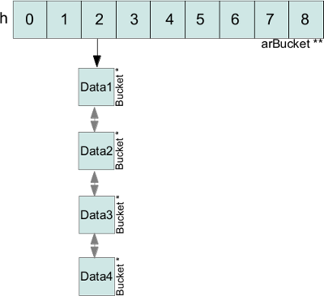

HashTables API¶
There are two sets of APIs working with hashtables: The first is the lower-level zend_hash API, which will be discussed in this section. The second one is the array API, which provides some higher-level functions for common operations and is covered in the next section.
Done
----
zend_hash_init
zend_hash_init_ex
zend_hash_destroy
zend_hash_graceful_destroy
zend_hash_graceful_reverse_destroy
zend_hash_clean
zend_hash_index_update
zend_hash_next_index_insert
zend_hash_index_exists
zend_hash_index_find
zend_hash_index_del
zend_hash_update
zend_hash_exists
zend_hash_find
zend_hash_del
zend_hash_add
zend_hash_quick_update
zend_hash_quick_exists
zend_hash_quick_find
zend_hash_quick_del
zend_hash_quick_add
Todo
----
zend_hash_apply
zend_hash_apply_with_argument
zend_hash_apply_with_arguments
(zend_hash_reverse_apply)
zend_hash_next_free_element
Iteration API
zend_hash_copy
zend_hash_merge
zend_hash_merge_ex
zend_hash_sort
zend_hash_compare
zend_hash_minmax
zend_hash_num_elements
zend_hash_rehash
(zend_hash_func)
Symtable API
Creating and destroying hashtables¶
Hashtables are allocated using ALLOC_HASHTABLE and initialized with zend_hash_init:
HashTable *myht;
/* Same as myht = emalloc(sizeof(HashTable)); */
ALLOC_HASHTABLE(ht);
zend_hash_init(myht, 1000000, NULL, NULL, 0);
The second argument to zend_hash_init is a size hint, which specifies how many elements we expect the hashtable to have. When 1000000 is passed PHP will allocate space for 2^20 = 1048576 elements on the first insert. Without the size hint PHP would first allocate space for 8 elements and then perform multiple resizes once more elements are inserted (first to 16, then 32, then 64 etc). Every resize requires the arBuckets to be reallocated and a “rehash” to occur (which recomputes the collision lists).
Specifying a size hint avoids those unnecessary resize operations and as such improves performance. This only makes sense for large hashtables though, for small tables passing 0 should be sufficient. In particular note that 8 is the minimum table size, so it doesn’t make a difference if you pass 0 or 2 or 7.
The third argument of zend_hash_init should always be NULL: It was previously used to specify a custom hash function, but this feature is no longer available. The fourth argument is the destructor function for the stored values and has the following signature:
typedef void (*dtor_func_t)(void *pDest);
Most of the time this destructor function will be ZVAL_PTR_DTOR (for storing zval * values). This is just the usual zval_ptr_dtor function but with a signature that is compatible to dtor_func_t.
The last argument of zend_hash_init specifies whether persistent allocation should be used. If you want the hashtable to live on after the end of the request this argument should be 1. There is a variation of the initialization function called zend_hash_init_ex, which accepts an additional boolean bApplyProtection argument. By setting it to 0 you can disable recursion protection (which is otherwise enabled by default). This function is used rather rarely, usually for internal structures of the engine (like the function or class table).
A hashtable can be destroyed using zend_hash_destroy and freed using FREE_HASHTABLE:
zend_hash_destroy(myht);
/* Same as efree(myht); */
FREE_HASHTABLE(myht);
The zend_hash_destroy function will invoke the destructor function on all buckets and free them. While this function runs the hashtable is in an inconsistent state and can not be used. This is usually okay, but in some rare cases (especially if the destructor function can call userland code) it may be necessary that the hashtable stays usable during the destruction process. In this case the zend_hash_graceful_destroy and zend_hash_graceful_reverse_destroy functions can be used. The former function will destroy the buckets in order of insertion, the latter in reverse order.
If you want to remove all elements from a hashtable, but not actually destroy it, you can use the zend_hash_clean function.
Integer keys¶
Before looking at the functions used to insert, retrieve and delete integer keys in a hashtable, lets first clarify what kind of arguments they expect:
Remember that the pData member of a bucket stores a pointer to the actual data. E.g. if you store zval * values in a hashtable, then pData will be a zval **. That’s why insertions into a hashtable will require you to pass a zval ** even though you specified zval * as the data type.
When you retrieve values from a hashtable you’ll pass a destination pointer pDest into which pData will be written. In order to write into the pointer using *pDest = pData yet another level of indirection is needed. So if zval * is your datatype you’ll have to pass a zval *** to the retrieval function.
As an example of how this looks like, lets consider the zend_hash_index_update function, which allows you to insert and update integer keys:
HashTable *myht;
zval *zv;
ALLOC_HASHTABLE(myht);
zend_hash_init(myht, 0, NULL, ZVAL_PTR_DTOR, 0);
MAKE_STD_ZVAL(zv);
ZVAL_STRING(zv, "foo", 1);
/* In PHP: $array[42] = "foo" */
zend_hash_index_update(myht, 42, &zv, sizeof(zval *), NULL);
zend_hash_destroy(myht);
FREE_HASHTABLE(myht);
The above example inserts a zval * containing "foo" at key 42. The fourth argument specifies the used data type: sizeof(zval *). As such the third argument, which is the inserted value, must be of type zval **.
The last argument can be used to both insert the value and retrieve it again in the same go:
zval **zv_dest
zend_hash_index_update(myht, 42, &zv, sizeof(zval *), (void **) &zv_dest);
Why would you want to do this? After all, you already know the value you inserted, so why would you want to fetch it again? Remember that hashtables always work on a copy of the passed value. So, while the zval * stored in the hashtable will be the same one as zv, it will be stored at a different address. In order to do a by-reference modification of the hashtable value you need the address of this new location, which is exactly what is written into zv_dest.
When storing zval * values the last argument of the update function is rarely necessary. On the other hand, when non-pointer data types are used, you’ll quite commonly see a pattern where first a temporary structure is created, which is then inserted into the hashtable and the value in the destination pointer is used for all further work (as changing the temporary structure would have no effect on the value in the hashtable).
Often you don’t want to insert a value at a particular key, but append it at the end of the hashtable. This can be accomplished using the zend_hash_next_index_insert function:
if (zend_hash_next_index_insert(myht, &zv, sizeof(zval *), NULL) == SUCCESS) {
Z_ADDREF_P(zv);
}
The function inserts zv at the next available integer key. So if the largest used integer key was 42 the new value will be inserted at key 43. Note that unlike zend_hash_index_update this function can fail and you need to check the return value against SUCCESS/FAILURE.
To see when such a failure can occur, consider this example:
zend_hash_index_update(myht, LONG_MAX, &zv, sizeof(zval *), NULL);
if (zend_hash_next_index_insert(myht, &zv, sizeof(zval *), NULL) == FAILURE) {
php_printf("next_index_insert failed!\n");
}
Here a value is inserted at key LONG_MAX. In this case the next integer key would be LONG_MAX + 1, which overflows to LONG_MIN. As this overflow behavior is undesirable PHP checks for this special case and leaves nNextFreeElement at LONG_MAX.
When zend_hash_next_index_insert is run it will try to insert the value at key LONG_MAX, but this key is already taken, thus the function fails.
With the above knowledge the three remaining functions from the integer key API should be fairly straightforward: zend_hash_index_find gets the value of an index, zend_hash_index_exists checks if an index exists without fetching the value and zend_hash_index_del removes an entry. Here’s an example for the three functions:
zval **zv_dest;
if (zend_hash_index_exists(myht, 42)) {
php_printf("Index 42 exists\n");
} else {
php_printf("Index 42 doesn't exist\n");
}
if (zend_hash_index_find(myht, 42, (void **) &zv_dest) == SUCCESS) {
php_printf("Fetched value of index 42 into zv_dest\n");
} else {
php_printf("Couldn't fetch value of index 42 as it doesn't exist :(\n");
}
if (zend_hash_index_del(myht, 42) == SUCCESS) {
php_printf("Removed value at index 42\n");
} else {
php_printf("Couldn't remove value at index 42 as it doesn't exist :(\n");
}
zend_hash_index_exists return 1 is the index exists, 0 otherwise. The find and del functions return SUCCESS if the value existed and FAILURE otherwise.
String keys¶
String keys are handled very similarly to integer keys. The main difference is that the word index is removed from all function names. Of course these functions take a string and its length as parameters rather than an index.
The only caveat is what “string length” means in this context: In the hashtable API the string length includes the terminating NUL byte. In this regard the zend_hash API differs from nearly all other Zend APIs which do not include the NUL byte in the string length.
What does this mean practically? When passing a literal string, the string length will be sizeof("foo") rather than sizeof("foo")-1. When passing a string from a zval, the string length will be Z_STRVAL_P(zv)+1 rather than Z_STRVAL_P(zv).
Apart from this the functions are used in exactly the same way as the index functions:
HashTable *myht;
zval *zv;
zval **zv_dest;
ALLOC_HASHTABLE(myht);
zend_hash_init(myht, 0, NULL, ZVAL_PTR_DTOR, 0);
MAKE_STD_ZVAL(zv);
ZVAL_STRING(zv, "bar", 1);
/* In PHP: $array["foo"] = "bar" */
zend_hash_update(myht, "foo", sizeof("foo"), &zv, sizeof(zval *), NULL);
if (zend_hash_exists(myht, "foo", sizeof("foo"))) {
php_printf("Key \"foo\" exists\n");
}
if (zend_hash_find(myht, "foo", sizeof("foo"), (void **) &zv_dest) == SUCCESS) {
php_printf("Fetched value at key \"foo\" into zv_dest\n");
}
if (zend_hash_del(myht, "foo", sizeof("foo")) == SUCCESS) {
php_printf("Removed value at key \"foo\"\n");
}
if (!zend_hash_exists(myht, "foo", sizeof("foo"))) {
php_printf("Key \"foo\" no longer exists\n");
}
if (zend_hash_find(myht, "foo", sizeof("foo"), (void **) &zv_dest) == FAILURE) {
php_printf("As key \"foo\" no longer exists, zend_hash_find returns FAILURE\n");
}
zend_hash_destroy(myht);
FREE_HASHTABLE(myht);
The above snippet will print:
Key "foo" exists
Fetched value at key "foo" into zv_dest
Removed value at key "foo"
Key "foo" no longer exists
As key "foo" no longer exists, zend_hash_find returns FAILURE
Apart from zend_hash_update another function is offered for inserting string keys: zend_hash_add. The difference between the two functions is the behavior when the key already exists. zend_hash_update will overwrite the value, whereas zend_hash_add will return FAILURE instead.
This is how zend_hash_update behaves when you try to overwrite a key:
zval *zv1, *zv2;
zval **zv_dest;
/* ... zval init */
zend_hash_update(myht, "foo", sizeof("foo"), &zv1, sizeof(zval *), NULL);
zend_hash_update(myht, "foo", sizeof("foo"), &zv2, sizeof(zval *), NULL);
if (zend_hash_find(myht, "foo", sizeof("foo"), (void **) &zv_dest) == SUCCESS) {
if (*zv_dest == zv1) {
php_printf("Key \"foo\" contains zv1\n");
}
if (*zv_dest == zv2) {
php_printf("Key \"foo\" contains zv2\n");
}
}
The above code will print Key "foo" contains zv2, i.e. the value has been overwritten. Now compare with zend_hash_add:
zval *zv1, *zv2;
zval **zv_dest;
/* ... zval init */
if (zend_hash_add(myht, "bar", sizeof("bar"), &zv1, sizeof(zval *), NULL) == FAILURE) {
zval_ptr_dtor(&zv1);
} else {
php_printf("zend_hash_add returned SUCCESS as key \"bar\" was unused\n");
}
if (zend_hash_add(myht, "bar", sizeof("bar"), &zv2, sizeof(zval *), NULL) == FAILURE) {
zval_ptr_dtor(&zv2);
php_printf("zend_hash_add returned FAILURE as key \"bar\" is already taken\n");
}
if (zend_hash_find(myht, "bar", sizeof("bar"), (void **) &zv_dest) == SUCCESS) {
if (*zv_dest == zv1) {
php_printf("Key \"bar\" contains zv1\n");
}
if (*zv_dest == zv2) {
php_printf("Key \"bar\" contains zv2\n");
}
}
The code results in the following output:
zend_hash_add returned SUCCESS as key "bar" was unused
zend_hash_add returned FAILURE as key "bar" is already taken
Key "bar" contains zv1
Here the second call to zend_hash_add returns FAILURE and the value stays at zv1.
Note that while there is a zend_hash_add function for string keys there is no equivalent for integer indices. If you need this kind of behavior you have to either do an exists call first or make use of a lower-level API:
_zend_hash_index_update_or_next_insert(myht, 42, &zv, sizeof(zval *), NULL, HASH_ADD ZEND_FILE_LINE_CC)
For all of the above functions there exists a second quick variant that accepts a precomputed hash value. This allows you to compute the hash of a string once and then use it across multiple calls. This improves performance as the hash value does not have to be recomputed every time. The hash value is always passed after the string length:
ulong h; /* hash value */
/* ... zval init */
h = zend_get_hash_value("foo", sizeof("foo"));
zend_hash_quick_update(myht, "foo", sizeof("foo"), h, &zv, sizeof(zval *), NULL);
if (zend_hash_quick_find(myht, "foo", sizeof("foo"), h, (void **) &zv_dest) == SUCCESS) {
php_printf("Fetched value at key \"foo\" into zv_dest\n");
}
if (zend_hash_quick_del(myht, "foo", sizeof("foo"), h) == SUCCESS) {
php_printf("Removed value at key \"foo\"\n");
}
Using the quick API only makes sense if you are accessing the key a lot (e.g. in a loop). There is no need to make use of it just because you are accessing the key two or three times. The quick functions are mostly used in the engine where precomputed hash values are available through various caches and optimizations.
Playing with items, inserting and removing¶
- Ok, now let’s basically play with a hashtable. There are 3 things to remember every time you come to play with hashtables:
- Whether the key is an integer or a string, the API call will always differ from both cases
- Whether you already got a zval* to insert into the table, or you just would like the table to create it and insert it for you
- If you want to use a string key, whether or not you already computed its hash using the hash function
So, remember this and we are done:
HashTable *ht1 = NULL;
ALLOC_HASHTABLE(ht1); /* allocate the table */
zend_hash_init(ht1, 3, NULL, ZVAL_PTR_DTOR, 0); /* Prepare it to accept 3 elements, which you'll free using ZVAL_PTR_DTOR callback */
zval *myval1, *myval2, *myval3 = NULL;
MAKE_STD_ZVAL(myval1);MAKE_STD_ZVAL(myval2);MAKE_STD_ZVAL(myval3); /* allocate 3 zvals */
ZVAL_STRING(myval1, "hello world", 1); /* a string */
ZVAL_LONG(myval2, 42); /* a long */
ZVAL_TRUE(myval3); /* a boolean */
if (zend_hash_index_update(ht1, 12, (void *)&myval2, sizeof(zval *), NULL) == SUCCESS) { /* PHP: $array[12] = 42 */
php_printf("Added zval myval2 to ht1 at index 12\n");
}
if (zend_hash_add(ht1, "str", sizeof("str"), (void *)&myval1, sizeof(zval *), NULL) == SUCCESS) { /* PHP: $array['str'] = 'hello world' */
php_printf("Added zval myval1 to ht1 at index 'str' \n");
}
ulong key;
/* Next numeric key, Should obviously be 13 here */
key = zend_hash_next_free_element(ht1);
if (zend_hash_next_index_insert(ht1, (void *)&myval3, sizeof(zval *), NULL) == SUCCESS) { /* PHP: $array[] = true */
php_printf("Added zval myval3 to ht1 at index %ld \n", key);
}
Warning
Be careful of the return type, it’s not as you would expect 0/1, so, never write something like: if(zend_hash_add(/*...*/)) { but write: if(zend_hash_add(/*...*/) == FAILURE) {. Always check against SUCCESS or FAILURE macros when you use zend_hash API.
Note
You don’t pass the zval * to the hashtable, but its address, becoming a zval **. HashTables always play one level of indirection above what you pass them, so if you pass it, say, an int **, it will play with an int ***. We usually use zval *, so it plays with zval *.
As you can see, it’s a little bit weird to insert zvals into a hashtable. Fortunately, there exists another API witch goal is to create and allocate the zval for us, just pass its value and you are done. What is special about this API, is that it doesn’t play directly with a hashtable itself, but expect you to embed the Hashtable into a zval as well. The API is so fully zval-turned, but under the hood it uses zend_hash API. Playing with the zval special API, our above example then become something like that:
zval *ht1 = NULL;
ALLOC_INIT_ZVAL(ht1);
array_init(ht1, 3);
if (add_index_long(ht1, 12, 42) == SUCCESS) {
php_printf("Added zval of type long (42) to ht1 at index 12\n");
}
if (add_assoc_string(ht1, "str", "hello world", 1) == SUCCESS) {
php_printf("Added zval of type string ('hello world') to ht1 at index 'str' \n");
}
/* There does not exist something like add_next_index_bool() */
Note
Like we said, the API is different weither the key you provide is an integer (ulong), or a string (char *) or if you dont provide key at all and let the implementation choose the next one for you. Mainly “assoc” means string keys, and “index” means integer keys.
So, depending on the case, you’ll choose to use directly the zend_hash API, or go with the zval add_ API.
Note
Remember there is no problem having told the zend_hash API we would store 3 elements (using initialisation function) into it: it will round up our 3 to 4, and, if we would come to add more elements, it automatically internally resizes itself, we have nothing to do with that when using the API.
Retrieving, deleting and checking for items¶
Now we can prepare a hashtable, and feed it with data, mainly zvals. What about looking for our data now? Or checking whether they exist or not into the table? Let’s go:
HashTable *ht1 = NULL; ALLOC_HASHTABLE(ht1);
zend_hash_init(ht1, 8, NULL, ZVAL_PTR_DTOR, 0);
zval *myval; MAKE_STD_ZVAL(myval);
ZVAL_STRING(myval, "hello world", 1); /* a string */
if (zend_hash_index_update(ht1, 12, (void *)&myval, sizeof(zval *), NULL) == FAILURE) { /* add the value to index 12 */
zend_error(E_ERROR, "Could not add value to the hashtable");
zend_bailout();
}
zval **found = NULL;
if (zend_hash_index_find(ht1, 12, (void **)&found) == SUCCESS) {
php_printf("Hey, seems like there is something at numeric key 12, stored it into 'found' ");
zend_hash_index_del(ht1, 12); /* Delete the item */
}
Same thing as if you look for a value at an integer index, or a string index, you won’t use the same API call. Also, remember we added a zval ** into the hashtable (the address of a zval *), so, you have to provide the ‘find’ function with a zval **, and as it will have to write to it, you effectively end up passing a zval *** to ‘find’, as being the address of your zval ** storage.
Should you just want to check for existence?
if (zend_hash_index_exists(ht1, 12)) {
/* Yes! */
}
And if you deal with string type keys, the API becomes:
if (zend_hash_exists(ht1, "fookey", sizeof("fookey"))) { /* Returns 1 or 0, no check against macro needed */
/* Yes! */
}
zval **found = NULL;
if (zend_hash_find(ht1, "fookey", sizeof("fookey"), (void **)&found) == SUCCESS) { /* Just to show the call */
zend_hash_del(ht1, "fookey", sizeof("fookey")); /* Removing the item from the table */
}
One last thing: if you need to get the current data pointed by the iterator, the API allows you to do so, like this:
if (zend_hash_get_current_data(ht1, (void **)&found) == SUCCESS) {
/* Yes! */
}
For the key, you first have to determine if it’s a string or an int, then just use the correct argument, like this:
int keytype, num_key;
char *str_key = NULL;
keytype = zend_hash_get_current_key(ht1, &str_key, &num_key, 0);
switch (keytype) {
case HASH_KEY_NON_EXISTANT:
zend_error(E_NOTICE, "There is no current element in this array");
break;
case HASH_KEY_IS_INT:
php_printf("Key was found!, it is an integer: %ld", num_key);
break;
case HASH_KEY_IS_STRING:
php_printf("Key was found!, it is a string: '%s'", str_key);
break;
EMPTY_SWITCH_DEFAULT_CASE()
}
/* Just to let you know, we could have called zend_hash_get_current_key_type(ht1, &keytype); as well */
String keys and hashing algorithm¶
You know when you use a string key. You know what happens to it when it dives into the zend_hash API call you perform: it gets hashed by a hashing algorithm. This is a basic concept of hashtables we talked about in introduction chapter. Let’s see what the default hashing algo looks like:
static inline ulong zend_inline_hash_func(const char *arKey, uint nKeyLength)
{
register ulong hash = 5381;
/* variant with the hash unrolled eight times */
for (; nKeyLength >= 8; nKeyLength -= 8) {
hash = ((hash << 5) + hash) + *arKey++;
hash = ((hash << 5) + hash) + *arKey++;
hash = ((hash << 5) + hash) + *arKey++;
hash = ((hash << 5) + hash) + *arKey++;
hash = ((hash << 5) + hash) + *arKey++;
hash = ((hash << 5) + hash) + *arKey++;
hash = ((hash << 5) + hash) + *arKey++;
hash = ((hash << 5) + hash) + *arKey++;
}
switch (nKeyLength) {
case 7: hash = ((hash << 5) + hash) + *arKey++; /* fallthrough... */
case 6: hash = ((hash << 5) + hash) + *arKey++; /* fallthrough... */
case 5: hash = ((hash << 5) + hash) + *arKey++; /* fallthrough... */
case 4: hash = ((hash << 5) + hash) + *arKey++; /* fallthrough... */
case 3: hash = ((hash << 5) + hash) + *arKey++; /* fallthrough... */
case 2: hash = ((hash << 5) + hash) + *arKey++; /* fallthrough... */
case 1: hash = ((hash << 5) + hash) + *arKey++; break;
case 0: break;
EMPTY_SWITCH_DEFAULT_CASE()
}
return hash;
}
We won’t explain it, simply recall what we said in intro: it leads to collisions, in some cases, but it is fast. Faster enough for common use cases but there is a case where using it would be a pure waste: calling it with several times the same argument. And this can happen quiet often, imagine you have a string key “mykey”, if you happen to call any zend_hash API with this key, all of them will call for the hash function, and it obviously will always lead to the same hash result. This is a waste.
That’s why the zend_hash API is nice about this as it can allow you to call for the hashing function, save the hash somewhere, and everywhere in the future you could be tempted to use your string key “mykey”, you know would be able to reuse the hash you computed. Save CPU cycles, the idea is as easy as just not asking the CPU for doing several task the exact same job.
Let’s show this particular API you could need in your future developments:
ulong my_hash = zend_get_hash_value("foobar", sizeof("foobar"));
HashTable *ht1 = NULL; ALLOC_HASHTABLE(ht1); zend_hash_init(ht1, 2, NULL, ZVAL_PTR_DTOR, 0);
zval *myval1 = NULL; MAKE_STD_ZVAL(myval1);
ZVAL_STRING(myval1, "hello world", 1);
if (zend_hash_quick_add(ht1, "foobar", sizeof("foobar"), my_hash, (void *)&myval1, sizeof(zval *), NULL) == SUCCESS) {
php_printf("Added zval myval1 to ht1 at index 'str' \n");
}
if (zend_hash_quick_exists(ht1, "foobar", sizeof("foobar"), my_hash)) {
php_printf("Just checked, our value is in! \n");
}
zend_hash_quick_del(ht1, "foobar", sizeof("foobar"), my_hash); /* Delete the value */
if (zend_hash_quick_exists(ht1, "foobar", sizeof("foobar"), my_hash) == 0) {
php_printf("Obviously, the value is not here any more\n");
}
Wondering why, while passing the precomputed hash, we still need to pass the key string at every API call? Well it’s easy: because of collisions. There is no fact as “one string key = exactly one computed hash”. Collisions can happen, so the API will obviously use the precomputed hash we provided it, but it will always check for string equality as well (strcmp), because it never can be sure that at this hash index, there is only our data with our string key. But, we solved our problem here: we only triggered the hash algorithm once for all, and not for every API call we just triggered.
Iterating over the table¶
One more need you could meet about hashtables is to iterate over them. The zend_hash API provides all you need about this, and it also provides ways to apply a callback to elements into hashtables. This is part of the next chapter, first, let’s concentrate on how to manually iterate over table items.
Basically, the iteration is just about remembering what the current position is, and this piece of information is stored in the pInternalPointer field of the hashtable. However, it’s not recommended to play with this internal position, because the table you are iterating over may be shared somewhere else, and modifying its internal pointer could lead to bugs elsewhere, where other functions wouldn’t expect it to change. This is why the API allows you (and that’s what we’ll always use) to iterate over a hashtable using an external position pointer, welcome the HashPosition type.
HashPosition is just a typedef to Bucket *, so it represents the current item, and passing a pointer to this HashPosition to every iteration-related functions will make them move it: you will iterate without changing the internal HashTable position which is correct.
Let’s show an example using all we’ve learned since the beginning of the chapter:
HashTable *myht = NULL; ALLOC_HASHTABLE(myht); zend_hash_init(myht, 8, NULL, ZVAL_PTR_DTOR, 0);
zval *array = NULL;
ALLOC_ZVAL(array);
array->type = IS_ARRAY;
array->value.ht = myht;
add_assoc_bool(array, "bool", 1);
add_index_double(array, 1, 1.1);
add_next_index_string(array, "hello world", 1);
add_assoc_long(array, "the answer", 42);
HashPosition mypos;
zval **data = NULL;
ulong longkey;
char *strkey = NULL;
zend_hash_internal_pointer_reset_ex(myht, &mypos); /* Pass mypos */
while(zend_hash_has_more_elements_ex(myht, &mypos) == SUCCESS) {
zend_hash_get_current_data_ex(myht, (void **)&data, &mypos);
php_printf("At key ");
switch (zend_hash_get_current_key_type_ex(myht, &mypos)) {
case HASH_KEY_IS_LONG:
zend_hash_get_current_key_ex(myht, &strkey, NULL, &longkey, 0, &mypos);
php_printf("%ld", longkey);
break;
case HASH_KEY_IS_STRING:
zend_hash_get_current_key_ex(myht, &strkey, NULL, &longkey, 0, &mypos);
php_printf("'%s'", strkey);
break;
}
zval *datacopy = NULL;
copy_and_convert_to_string(*data, &datacopy);
php_printf(", we have '%s' \n", Z_STRVAL_P(datacopy));
zval_ptr_dtor(&datacopy);
zend_hash_move_forward_ex(myht, &mypos);
}
zval_ptr_dtor(&array);
/* Displays:
At key 'bool', we have '1'
At key 1, we have '1.1'
At key 2, we have 'hello world'
At key 'the answer', we have '42'
*/
Notice how we used the ‘_ex’ alternative of functions we met before. All functions that deals with “_current_” values or keys should not use the internal iterator pointer anymore like before, but the one we provide ourselves, called here mypos.
Warning
Remember to never modify a hashtable internal pointer. In a real life coding, things are shared, and the hashtable you’ll be using will come from someone, to you, and be passed to someone else. Obviously one could expect the hashtable to now contain more or less items when passing into your hands, noone would expect its internal iteration pointer to have changed. Always use HashPosition, at least until you really know what you are doing.
Mapping functions¶
HashAlgorithm and colliding the table¶
Let’s recall how all this works: When inserting a data, the (usually) provided key may be of two types: int or string. If the key is a string, it then passes through the hash algorithm, which is DJBX33A in PHP, and an integer comes out from this function. If the key were an integer, it is just used as-is. In both cases, we end up having a hash key with an integer of type unsigned long (ulong), with no limit in its bounds. So we would need to allocate an array (arBuckets) that should be referenced from 0 to sizeof(ulong), something like 18446744073709551615 on 64bits platform, which is clearly impossible. The problem is that the actual hash key we computed is just too big and has no bounds on the unsigned long range, it then cannot be used as-is as a C array index because the array would have been too huge to fit in memory. What is then done as a second step, is that the hash key gets narrow-bounded, using a mask. The mask cuts of the most significant bits in the integer, and dramatically lowers its space, making it suitable to be passed as an index for a preallocated C array, arBuckets. The mask is calculated as being the size of the HashTable minus one. Here is the code for string typed keys:
ht->nTableMask = ht->nTableSize - 1;
void *p;
h = zend_inline_hash_func(arKey, nKeyLength); /* Hash the arKey (char*) to get the hash key h (ulong) */
nIndex = h & ht->nTableMask; /* Narrow h by masking its highest bits, obtain nIndex, an ulong from 0 to TableSize */
p = ht->arBuckets[nIndex]; /* Use the nIndex to get back p (Bucket*) from the bucket array arBuckets */
/* Use p here */
We said that if the provided key is of type integer (ulong) and not string (char *), we just don’t need to run the hash function. Code then becomes:
ht->nTableMask = ht->nTableSize - 1;
void *p;
h = provided_key /* of type ulong */
nIndex = h & ht->nTableMask; /* Narrow h by masking its highest bits, obtain nIndex, a ulong from 0 to TableSize */
p = ht->arBuckets[nIndex]; /* Use the nIndex to get back p (Bucket*) from the bucket array arBuckets */
/* Use p here */
What this means is that if you build a special PHP array, with only integer keys, that when used with the mask give always the same index, then you will overcollide the array, and end-up having a possibly too huge linked list. Traversing a linked list is O(n), so the more the linked list grows, the slower it becomes to traverse it. Knowing that the API has to traverse the lists at every lookup or insertion (which triggers a lookup) in the table, it is then easy to DOS this part of PHP.
To show this, let’s build a use case and explain it:
<?php
/* 2^15, for example, any power of 2 works */
$size = 32768;
$startTime = microtime(1);
$array = array();
$maxInsert = $size * $size;
for ($key = 0; $key <= $maxInsert; $key += $size) {
$array[$key] = 0;
}
printf("%d inserts in %.2f seconds", $key/$size, microtime(1)-$startTime);
Running this code, you should obtain something like 32769 insertions in 9.84 seconds, which is just a very huge amount of time. Let’s now explain what happens at a lower level. We know that using a key as an integer, no hashing function comes to play, so the code being run to compute the C array key (nIndex) mainly looks like:
nIndex = h & ht->nTableMask; /* masking */
p = ht->arBuckets[nIndex];
We know that nTableMask is table size minus one. As the key is added 32768 (2 powered by 15) at each step of the for loop, it jumps from bit to bit, and the mask is just irrelevant:
for ($key = 0; $key <= $maxInsert; $key += $taille) {
$array[$key] = 0;
}
mask: 0000.0111.1111.1111.1111
&
32768 0000.1000.0000.0000.0000
65536 0001.0000.0000.0000.0000
98304 0001.1000.0000.0000.0000
131072 0010.0000.0000.0000.0000
163840 0010.1000.0000.0000.0000
...
= 0 !
We end up inserting every item (we insert 32769 total items) at the same arBuckets index: 0. Every item is then added to the linked list sitting at index 0 of arBuckets, and traversing a fast growing linked list takes so much time. Be convinced by breaking this actual collision-proof code, just use a size of 32767 for example, instead of the special 32768. You will get something like 32768 inserts in 0.01 seconds, which is about 1000 times faster.
When the hash algorithm + the hash mask works normally, meaning we are not cheating them voluntary like we did, it distributes pretty well buckets into the arBuckets:

When it’s not the case, you end with something like this, which we could call the ‘worst scenario’:
